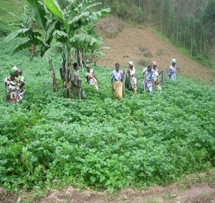
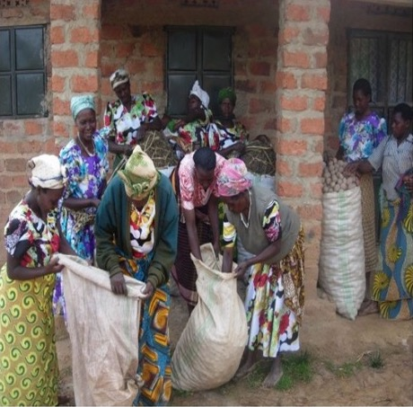

Biringo Women's Development Association (BIWODA) is a group of rural women who formally collectively came together for a development course in 2014. It was founded in the Buramba-Rwemihanga parishes (Rubaya-Kahungye Sub Counties), one of the sub-counties that make up Kabale District in southwestern Uganda.
Biringo is a rural area far away from the district headquarters located in Kabale. Due to its remoteness, there are no infrastructures and social services which makes it one of the most disadvantaged/hard-to-reach areas in Kabale district.
Women in the Biringo community, like any other women in rural Uganda, are the breadwinners of their families but are the most disadvantaged class of the population with regard to income generation. Families in Biringo community have an average of six members per family and daily income is less than 2000 Ugx. These families depend on subsistence farming. Land in Kabale district is scarce -- households have limited land on which they cultivate their crops for consumption at home.
The women of Biringo are hardworking and resilient but have been trapped in a cycle of poverty for generations.
To empower rural women by building their capacity for sustainable development through innovative practices in sustainable agriculture, land conservation, renewable energy, education, and livelihood support. We envision a future where Biringo rural women are empowered, transformed, and equipped to lead sustainable and self-reliant lives and communities.